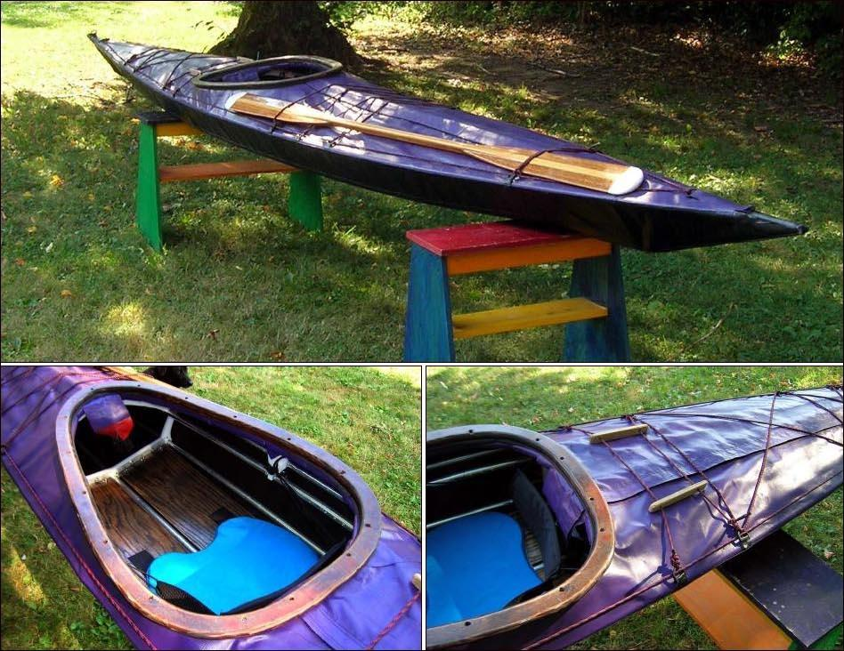

| Sea Tour 17-R by David Long | Menu Previous Page Next Page |
|

David Long from West Hartford, Connecticut has just completed his Sea Tour 17-R (17ft X 22in) . This kayak features a raised/flat aft deck, wood coaming, adjustable footbraces, and full length deck zippers. Here are his comments concerning the boats performance...." The boat turns easily whether edged or not and certainly is more than fast enough for anything I want to do. The boat fits well enough so that it is easy to control and it responds very quickly to body movement and position. The frame flex is simply wonderful. It’s great to feel the movement of the frame in the small to moderate swells and boat wakes that I’ve been in so far.".... Sea Tour 17 / 17-R Offsets/ Sea Tour EXP can be found at the end of this section. Use the (BACK) key to return.
|
|